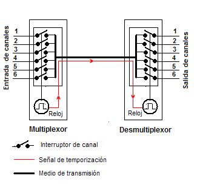
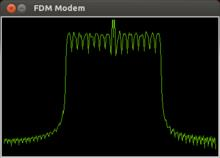
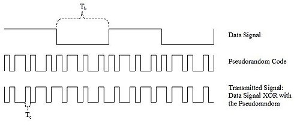

En telecomunicación, la multiplexación es la técnica de combinar dos o más señales, y transmitirlas por un solo medio de transmisión. La principal ventaja es que permite varias comunicaciones de forma simultánea, usando un dispositivo llamado multiplexor. El proceso inverso se conoce como desmultiplicación.
Existen muchas estrategias de multiplexación según el protocolo de comunicación empleado, que puede combinarlas para alcanzar el uso más eficiente; los más utilizados son:
La multiplexación por división de tiempo o TDM síncrona (Time division multiplexing );
La multiplexación estadística o TDM asíncrona o TDM estadística (técnica más avanzada que la anterior);
La multiplexación por división de frecuencia o FDM (Frequency-division multiplexing) y su equivalente para medios ópticos, por división de longitud de onda o WDM (de Wavelength);
La multiplexación por división en código o CDM (Code division multiplexing);
Cuando existe un esquema o protocolo de multiplexación pensado para que múltiples usuarios compartan un medio común, como por ejemplo en telefonía móvil o WiFi, suele denominarse control de acceso al medio o método de acceso múltiple.
La multiplexación por división de tiempo (MDT o TDM, del inglés Time Division Multiplexing), es el tipo de multiplexación más utilizado en la actualidad, especialmente en los sistemas de transmisión digitales. En ella, el ancho de banda total del medio de transmisión es asignado a cada canal durante una fracción del tiempo total (intervalo de tiempo).
En este circuito, las entradas de seis canales llegan a los denominados interruptores de canal, los cuales se cierran de forma secuencial, controlados por una señal de reloj, de manera que cada canal es conectado al medio de transmisión durante un tiempo determinado por la duración de los impulsos de reloj.
En el extremo distante, el desmultiplexor realiza la función inversa, esto es, conecta el medio de transmisión, secuencialmente, con la salida de cada uno de los seis canales mediante interruptores controlados por el reloj del demultiplexor. Este reloj del extremo receptor funciona de forma sincronizada con el del multiplexor del extremo emisor mediante señales de temporización que son transmitidas a través del propio medio de transmisión o por un camino.
En las telecomunicaciones, la multiplexación por división de frecuencia (FDM) es una técnica mediante la cual el ancho de banda total disponible en un medio de comunicación se divide en una serie de sub-bandas de frecuencias levemente distintas, cada una de las cuales se utiliza para transportar una señal separada. Esto permite que un solo medio de transmisión tal como el espectro de radio, un cable o fibra óptica transporte múltiples señales independientes en el mismo vínculo. Otro uso es llevar segmentos en serie separados o segmentos de una señal de velocidad más alta en paralelo.
El ejemplo más natural de multiplexión por división de frecuencia es la radiodifusión y la televisión, en la que múltiples señales de radio a diferentes frecuencias pasan a través del aire al mismo tiempo. Otro ejemplo es la televisión por cable, en la que muchos canales de televisión se llevan simultáneamente en un solo cable. Las diferencias de frecuencia portadora evita que las señales se interfieran, lo que hace necesario una coordinación entre los distintos emisores, coordinación que normalmente es llevada por una autoridad como la FCC en USA, o la UIT a nivel internacional.
Las múltiples señales de información que se envían a través de un sistema FDM, tales como los canales de televisión que se envían a través de un sistema de televisión por cable, se denominan señales de banda base. En el extremo de la fuente, para cada canal de frecuencia, un oscilador electrónico genera una señal portadora, una forma de onda oscilante constante a una sola frecuencia que sirve para "transportar" información. El portador es mucho más alto en frecuencia que la señal de banda base, por lo menos el doble de la frecuencia más alta de la banda base (principio de Nyquist). La señal portadora y la señal en banda base se combinan en un circuito modulador. El modulador altera algunos aspectos de la señal portadora, tales como su amplitud, frecuencia o fase, con la señal de banda base, "traspasando" los datos al portador.
El resultado de modular (mezclar) el portador con la señal de banda base es generar subfrecuencias cerca de la frecuencia portadora, a la suma (fC + fB) y la diferencia (fC - fB) de las frecuencias. La información de la señal modulada se lleva en bandas laterales a cada lado de la frecuencia portadora. Por lo tanto, toda la información transportada por el canal está en una banda estrecha de frecuencias agrupadas alrededor de la frecuencia portadora, esto se llama la banda de paso del canal.
De forma similar, se usan portadoras en otras frecuencias, creando otros canales de información. Los portadores están lo suficientemente separados en frecuencia de forma tal que la banda de frecuencias ocupada por cada canal -las bandas pasantes de los canales separados- no se solapen. Todos los canales se envían a través del mismo medio de transmisión, tal como un cable coaxial, fibra óptica, o a través del aire usando un transmisor de radio. Siempre y cuando las frecuencias de canal estén lo suficientemente separadas entre sí de modo que ninguna de las bandas de paso se solape, los canales separados no interferirán entre sí. Así, el ancho de banda disponible se divide en "ranuras" o canales, cada uno de los cuales puede llevar una señal modulada separada.
Por ejemplo, el cable coaxial utilizado por los sistemas de televisión por cable tiene un ancho de banda de unos 1000 MHz, pero la banda de paso de cada canal de televisión es de sólo 6 MHz de ancho, por lo que hay espacio para muchos canales en el mismo cable (con los avances en modulación digital, se subdivide en subcanales, hasta 10 canales de televisión digital donde había sólo uno analógico).
En el extremo de destino del cable o fibra, o del receptor de radio, para cada canal un oscilador local produce una señal en la frecuencia portadora de ese canal, que se mezcla con la señal modulada entrante. Las frecuencias "diferencia" se filtran, obteniéndose de nuevo la señal de banda base para ese canal. Esto se llama desmodulación. La señal de banda base resultante se filtra de las otras frecuencias y se emite al usuario.
En telecomunicaciones, la multiplexación por división de longitud de onda (WDM, del inglés Wavelength Division Multiplexing) es una tecnología que permite transmitir varias señales independientes sobre una sola fibra óptica mediante portadoras ópticas de diferente longitud de onda, usando luz procedente de un láser o un LED.
Este término se refiere a una portadora óptica (descrita típicamente por su longitud de onda) mientras que la multiplexación por división de frecuencia generalmente se emplea para referirse a una portadora de radiofrecuencia (descrita habitualmente por su frecuencia).
El dispositivo que une las señales se conoce como multiplexor mientras que el que las separa es un demultiplexor. Con el tipo adecuado de fibra puede disponerse un dispositivo que realice ambas funciones a la vez, actuando como un multiplexor óptico de inserción-extracción.
Los primeros sistemas WDM aparecieron en torno a 1985 y combinaban tan sólo dos señales. Los sistemas modernos pueden soportar hasta 160 señales y expandir un sistema de fibra de 10 Gb/s hasta una capacidad total 25,6 Tb/s sobre una sola fibra.
La multiplexación por división de código, acceso múltiple por división de código o CDMA (del inglés Code Division Multiple Access) es un término genérico para varios métodos de multiplexación o control de acceso al medio basados en la tecnología de espectro expandido.
La traducción del inglés spread spectrum se hace con distintos adjetivos según las fuentes; pueden emplearse indistintamente espectro ensanchado, expandido, difuso o disperso para referirse en todos los casos al mismo concepto.
Habitualmente se emplea en comunicaciones inalámbricas (por radiofrecuencia), aunque también puede usarse en sistemas de fibra óptica o de cable.
El término CDMA, sin embargo, suele utilizarse popularmente para referirse a una interfaz de aire inalámbrica de telefonía móvil desarrollada por la empresa Qualcomm, y aceptada posteriormente como estándar por la TIA norteamericana bajo el nombre IS-95 (o, según la marca registrada por Qualcomm, "cdmaONE" y su sucesora CDMA2000). En efecto, los sistemas desarrollados por Qualcomm emplean tecnología CDMA, pero no son los únicos en hacerlo.
En CDMA, la señal se emite con un ancho de banda mucho mayor que el precisado por los datos a transmitir; por este motivo, la división por código es una técnica de acceso múltiple de espectro expandido. A los datos a transmitir simplemente se les aplica la función lógica XOR con el código de transmisión, que es único para ese usuario y se emite con un ancho de banda significativamente mayor que los datos.
A la señal de datos, con una duración de pulso Tb, se le aplica la función XOR con el código de transmisión, que tiene una duración de pulso Tc. (Nota: el ancho de banda requerido por una señal es 1/T, donde T es el tiempo empleado en la transmisión de un bit). Por tanto, el ancho de banda de los datos transmitidos es 1/Tb y el de la señal de espectro expandido es 1/Tc. Dado que Tc es mucho menor que Tb, el ancho de banda de la señal emitida es mucho mayor que el de la señal original, y de ahí el nombre de "espectro expandido.
Cada usuario de un sistema CDMA emplea un código de transmisión distinto (y único) para modular su señal. La selección del código a emplear para la modulación es vital para el buen desempeño de los sistemas CDMA, porque de él depende la selección de la señal de interés, que se hace por correlación cruzada de la señal captada con el código del usuario de interés, así como el rechazo del resto de señales y de las interferencias multi-path (producidas por los distintos rebotes de señal).
El mejor caso se presenta cuando existe una buena separación entre la señal del usuario deseado (la señal de interés) y las del resto; si la señal captada es la buscada, el resultado de la correlación será muy alto, y el sistema podrá extraer la señal. En cambio, si la señal recibida no es la de interés, como el código empleado por cada usuario es distinto, la correlación debería ser muy pequeña, idealmente tendiendo a cero (y por tanto eliminando el resto de señales). Y además, si la correlación se produce con cualquier retardo temporal distinto de cero, la correlación también debería tender a cero. A esto se le denomina autocorrelación y se emplea para rechazar las interferencias multi-path.2
En general, en división de código se distinguen dos categorías básicas: CDMA síncrono (mediante códigos ortogonales) y asíncrono (mediante secuencias pseudoaleatorias).